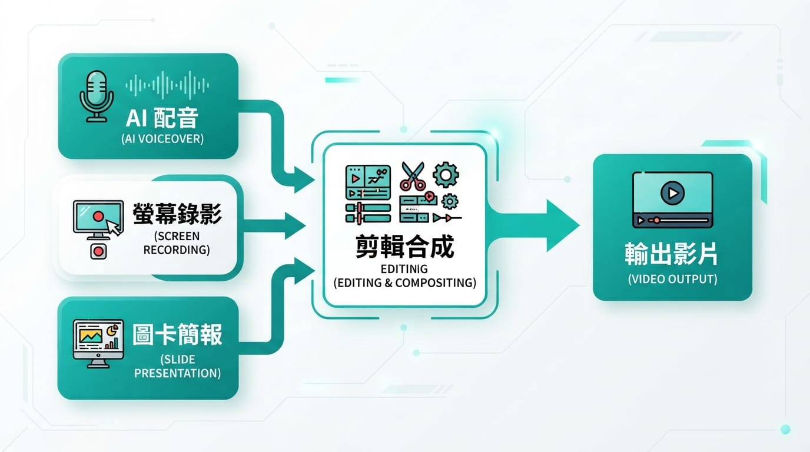

想在 YouTube 做技術教學，卻卡在同一件事：不想露臉，也不想對著麥克風講話。鏡頭感、佈景、剪自己說話的畫面，光想就累，很多人就這樣一直沒開始。
好消息是——技術教學影片本來就不需要你出鏡。觀眾要看的是「操作怎麼做」和「觀念怎麼懂」，不是你的臉。這篇就分享我實際在用的一套不露臉製作流程：AI 配音念旁白、螢幕錄影示範操作、圖卡講概念，三者合起來就是一支完整的教學影片。
這套流程我拿來做 App 開發教學系列，Mac 負責錄螢幕、Windows 負責剪輯，全程不露臉、不開麥，照樣能穩定產出。
一、先搞懂：教學影片其實分兩種畫面
這是整件事最關鍵的觀念。先把你的影片畫面拆成兩類，製作方式完全不同：
| 畫面類型 | 範例 | 怎麼做 |
|---|---|---|
| 螢幕實錄 | 安裝軟體、操作介面、跑程式 | 螢幕錄影，必須自己錄，AI 生不出來 |
| 概念說明 | 架構圖、比較表、流程 | 圖卡 / 簡報，用 Canva 做 |
為什麼要先分這個？因為很多人以為「不露臉 = 全部交給 AI」，結果想用 AI 生出操作畫面，怎麼弄都不對。真正要你動手的只有螢幕錄影這一塊，而它恰好不需要你的臉，只要錄下你的操作就好。概念畫面則用靜態圖卡補上，連錄都不用錄。
想通這點，不露臉影片就從「好像很難」變成「只是把三種素材拼起來」。

二、三種不露臉的路線
不露臉有幾種做法，先看哪種適合你：
- 路線 A：螢幕錄影 ＋ AI 配音（最推薦，最省力）
旁白交給 AI 念，你只要錄操作、做圖卡、剪輯。完全不用開麥、不用在意聲音狀態，產線最穩定。這篇主要講這條。
- 路線 B：螢幕錄影 ＋ 真人配音
一樣不露臉，但旁白你自己念。聲音比 AI 更有溫度、更有個人風格，代價是需要安靜環境和一支堪用的麥克風，而且每次錄音狀態要穩。
- 路線 C：虛擬角色（Avatar）
用一個 2D／3D 虛擬人物當主播掛在畫面角落。這條最花工，初期不建議，等頻道做起來、想強化人設再考慮。
如果你是剛起步、想先把影片做出來，直接選路線 A。等頻道有了節奏，再決定要不要換自己的聲音。
三、工具清單（含免費與付費）
AI 配音
旁白是整支影片的骨幹，中文配音自然不自然，差很多。
- TTSMaker（真免費首選）：線上貼文字就能轉語音、下載 MP3，不用登入、不帶浮水印，每週有免費字元額度、部分語音標示無限免費，而且官方條款允許商業使用（可放 YouTube）。最棒的是還能直接下載 SRT 字幕檔（見下方字幕段）。對旁白稿這種字數來說額度很夠用。
- 微軟 Azure TTS：繁體中文語音（曉臻、雲希等）台灣腔自然、有免費額度，想要更穩定或 API 串接時的好選擇。
- ElevenLabs：目前中文最自然的 AI 配音，有免費額度，付費方案約每月 5 美元起。想要頻道「門面聲音」更有質感時升級它。
- CapCut（剪映）內建文字轉語音：直接在剪輯軟體裡就能做、最方便，但要留意它不是完全免費——免費版的語音選項和匯出常有限制，較好的音色或無浮水印匯出多半要付費方案（見下方說明）。
授權提醒：免費 TTS 服務的額度與「可商用」條款常調整，發布前建議到該站授權頁再確認一次。
小訣竅：整個系列固定用同一個聲音，影片聽起來才有一致的「頻道感」。
用線上 TTS（以 TTSMaker 為例）生成配音的流程：
- 準備好「只有旁白」的稿子——不要把操作提示（例如「打開 App Store」這種畫面標註）貼進去，不然會被一起念出來。
- 打開 TTSMaker，貼上一段旁白，選一個中文語音音色（選定後整個系列固定用它）。
- 轉換後下載語音 MP3，若有需要也一併下載 SRT 字幕檔。
- 下一段重複步驟 2~3，記得用同一個音色、同一個語速，接起來才一致。
分段貼，不要全篇一次貼：每段獨立的 MP3 好對齊各段螢幕畫面，改一句只重轉一段，SRT 時間軸也更準。覺得太瑣碎可 2~3 段合併轉，但別整篇一次轉完。
如果改用 CapCut 內建文字轉語音：在時間軸新增文字素材 → 貼旁白 → 右側找「文字轉語音（Text to Speech）」→ 選中文音色套用，它會生成語音鋪到軌道；不需要字幕時把文字層透明度調 0 或刪掉、只留聲音。
付費提醒：CapCut 近年把方案拆成免費、Standard、Pro 多層（Standard 約每月 10 美元、Pro 約每月 20 美元，各地與行動版價格略有差異），較自然的音色、無浮水印匯出等部分需付費。想完全免費，用 TTSMaker 生成 MP3 再匯入剪輯軟體即可。
螢幕錄影
- OBS Studio：免費、功能強，Windows / Mac 都能用，可錄視窗、加游標高亮，是首選。
- Windows 內建 Xbox Game Bar：按
Win + G叫出，點錄影鈕就能錄，零安裝，錄視窗操作很夠用。 - macOS 內建螢幕錄製：Mac 用內建的「螢幕截圖」工具列（Shift＋Command＋5）或 QuickTime 就能錄，零安裝、很夠用。
- Camtasia / ScreenFlow：付費的錄影＋剪輯一體方案，想一次搞定可考慮。
錄程式畫面前，記得把開發工具的字體調大，不然程式碼在影片裡會小到看不清。
概念圖卡
- Canva：做架構圖、比較表、流程圖最快，模板多、好上手。像「軟體堆疊關係圖」「規格需求表」這類畫面，用它做又快又清楚。
- PowerPoint / Keynote：用內建轉場做簡單動畫，再錄螢幕輸出也行。
剪輯 ＋ 字幕
- CapCut（剪映）：好上手，自動字幕中文辨識不錯，還內建 AI 配音，一套就能從配音剪到上字幕。有免費版，但部分功能與無浮水印匯出需付費方案（見上方 AI 配音段的付費提醒）。
- DaVinci Resolve：完全免費、專業級，功能強但學習曲線稍陡，想長期深做、又想省訂閱費的首選。
想更系統地學影片剪輯與頻道經營，線上課程會比自己摸索省時間：
※ 本連結為 Hahow 好學校聯盟連結，連結導向 Hahow 平台（非特定課程頁）；透過它購課我會獲得少許回饋，不影響你的售價。
四、最小可行組合：全免費也能開跑
如果你想用最低成本先做出第一支，這組合可以不花訂閱費跑完：
| 工作 | 工具 | 費用 |
|---|---|---|
| AI 配音 ＋ 字幕 | TTSMaker（下載 MP3 ＋ SRT） | 免費、可商用 |
| 螢幕錄影 | OBS Studio，或系統內建錄製 | 免費、無浮水印 |
| 概念圖卡 | Canva | 免費版可用 |
| 剪輯 | DaVinci Resolve | 完全免費、無浮水印 |
這條線最大的省事點：配音和字幕一次搞定——TTSMaker 既給你語音 MP3、又給你對應的 SRT 字幕，剪輯時只要匯入、對齊時間就好。
>
為什麼不用 CapCut 當全免費組合？因為 CapCut 免費版匯出常帶浮水印，較好的音色與文字轉語音也多半要付費。CapCut 的好處是最好上手、一套搞定，若你不介意付月費或接受浮水印，它仍是方便的選擇。
等頻道做起來、想讓聲音更自然或剪輯更快，再升級到 ElevenLabs 配音、或付費版 CapCut 就好——把錢花在最有感的地方。
五、實際製作流程（照這個順序做）
我習慣的順序是「先聲音、再畫面、最後合成」，這樣剪輯時最好對齊：
- 先配音：把旁白稿一段一段貼進配音工具，分段匯出成多個音檔（例如
seg01、seg02）。分段是為了剪輯時好對齊畫面。 - 再錄螢幕：對照旁白內容，把每一段要示範的操作錄下來。操作放慢、滑鼠別移太快，讓觀眾跟得上。
- 做圖卡：用 Canva 把「概念說明」畫面做出來（架構圖、比較表等），匯出成圖片。
- 進剪輯軟體：配音軌鋪底，再把螢幕錄影和圖卡沿著時間軸鋪上去，對齊旁白。
- 上字幕：最省事的做法是直接用 TTS 附的 SRT——因為字幕是從你原本的旁白文字生成的，字一定是對的，匯入剪輯軟體後只要微調時間軸就好，不用像自動語音辨識那樣逐字抓錯字。若沒有 SRT 才退而用剪輯軟體的自動字幕，並人工校對專有名詞（英文術語最容易被辨識錯）。
- 輸出：1080p、MP4、H.264 格式。
- 最後校時間戳：影片剪好後，再回頭對 YouTube 說明欄的章節時間（00:00 那種），因為一開始的時間都是估的。
旁白稿怎麼準備
直接寫一份「口說逐字稿」：把每一句要念的旁白寫出來，並在旁邊標註「這句對應什麼畫面」。配音時只把要念的旁白貼進工具，畫面標註別貼進去。這份稿還能一稿多用——念旁白、對剪輯、改成 YouTube 說明欄文字，都靠它。
六、哪些影片需要 Mac？跨裝置分工
要不要用 Mac，取決於你錄的是哪個平台的操作：
| 教學主題 | 錄螢幕 | 配音／剪輯 |
|---|---|---|
| Android（Android Studio） | Windows 就行（Mac/Linux 也可） | Windows |
| iOS（Xcode） | 只能 Mac（Xcode 不支援 Windows） | Windows |
換句話說，只有 iOS 教學非得用 Mac 錄螢幕；Android 教學一整台 Windows 就能全包——錄螢幕、配音、剪輯一次搞定，連傳檔都省了。Windows 錄螢幕用 OBS 或內建的 Xbox Game Bar（Win + G）即可。
如果你跟我一樣做 iOS 教學、開發環境在 Mac、主力剪輯在 Windows，分工這樣：
- Mac 端：只做一件事——錄 Xcode 的螢幕操作。
- Windows 端：AI 配音、Canva 圖卡、剪輯、上字幕、輸出，全在這做。
兩台之間傳檔，螢幕錄影檔通常很大，建議用雲端硬碟（Google Drive / OneDrive）或 exFAT 格式的隨身碟（Mac、Windows 都讀得到），別用通訊軟體傳，會壓縮掉畫質。
七、幾個踩雷提醒
- 操作畫面一定要自己錄：這是 AI 取代不了的部分，別妄想生成。
- 錄之前關通知：開勿擾模式，免得錄到跳出來的訊息。
- 分段錄、別一鏡到底：每個步驟獨立錄短片段，重錄和剪輯都更有彈性。
- 「等很久」的畫面用加速帶過：下載、安裝、建置這種要等的過程，錄一小段，剪輯時加速或跳接就好。
- 字幕務必校對：自動字幕對中文口語和英文術語常出錯，發布前一定要看過一遍。
結語
不露臉做教學影片，門檻其實比想像低。核心就一句話：旁白交給 AI、操作自己錄、概念用圖卡，再用免費工具把三者拼起來。不用買相機、不用佈景、不用對鏡頭說話，你只要專注在「把內容講清楚」。
與其糾結要不要露臉，不如今天就把第一支的旁白稿寫出來、錄一段螢幕試試看。做出來，比完美更重要。🐾